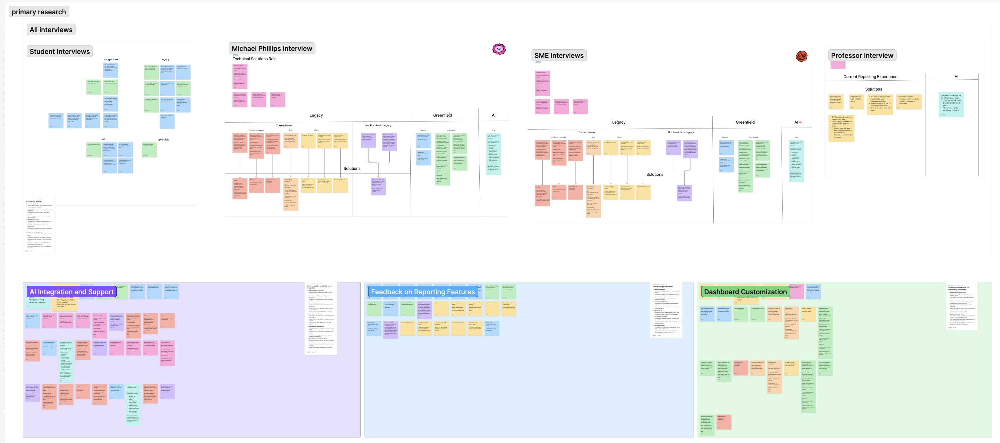
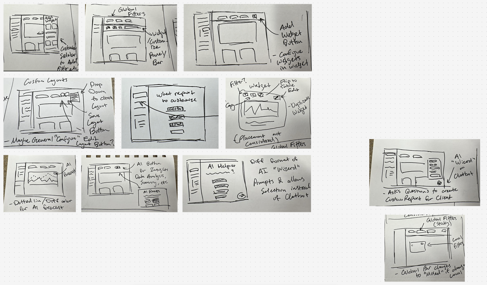

The Strategic Challenge
Lending Insights is Allied Solutions' core business intelligence platform, designed to deliver critical portfolio risk analytics and loan performance dashboards to member-owned credit unions. Credit union lending executives rely on this system to monitor automotive relationship indexes and prepare audit-ready portfolio reports for executive board reviews.
The legacy custom reporting feature was highly fragmented, cumbersome, and opaque. Crucial data filters were buried inside disorganized lists with completely ambiguous text labels like "Report Configuration" and "Custom 10". Because the dashboard lacked real-time interface feedback or data validation loops, executives could never verify if their adjustments were applied without re-running the entire query manually. To bypass this friction, lending teams frequently called Allied's internal support staff to compile their monthly reports from scratch, causing severe operational delays and bottlenecking internal client success teams.
 [ Figure 1: Current Custom Reporting Task Loop Friction Architecture ]
[ Figure 1: Current Custom Reporting Task Loop Friction Architecture ]
Milestone 1: Preliminary Auditing & Primary Research
We kicked off our discovery sprint by conducting a strict heuristic evaluation of the legacy system using Nielsen's 10 Usability Heuristics, mapped directly alongside primary usability testing sessions with business/finance students to capture baseline interactions. To ground our data structures in actual credit union context, we completed qualitative deep-dive interviews with two Subject Matter Experts (SMEs) from Allied's internal support desk and a university finance professor.
- Information Architecture Visibility Gaps: The system offered zero real-time chart feedback. Lenders could not search for graphs or configure duplicate measures on the same layout matrix, causing high upfront decision paralysis.
- The Integrated "Co-Pilot" Preference: Lenders explicitly rejected traditional floating help chatbots on dense financial interfaces, requesting instead an embedded natural-language data configuration wizard.
- Platform Competitive Benchmarking: Our comparative analysis across platforms like Tableau, Sisense, and Domo highlighted a clear market transition toward modular, widget-driven layouts supported by predictive forecasting curves.

[ Figure 2: Legacy Software Heuristic Analysis & Affinity Theme Mapping ]Milestone 2: The Tactical AI Pivot & Whiteboarding
Our initial low-fidelity sketching targeted basic modular grid alignments. However, during sponsor review sessions, our team executed a major strategic pivot: we leveraged emerging generative AI canvas tools (Figma Make) to rapidly assemble and test two distinct operational interface concepts early in the loop.
Version A (Guided Dashboard): A linear, wizard-based interface prioritizing automated step-by-step reporting templates for swift walkthroughs.
Version B (Flexible Workspace): A modular sandbox engine optimizing direct graph customization, modeled after high-density data analytics platforms.
We ran A/B validation tests on both versions with four Lending Insights SMEs. While developers sought standard system constraints, executives required high customizability. To combine these insights, we held a comprehensive design synthesis session, combining Version A's clear step-by-step onboarding wizard with Version B's direct widget manipulation capabilities into a single, cohesive layout blueprint.

[ Figure 3: Mid-Fidelity Collaborative Layout Design Whiteboarding Session ]Milestone 3: Usability Testing & High-Fidelity Synthesis
The final high-fidelity system transitions Lending Insights from a rigid text generator into a flexible, automated workspace engine built with a custom design system styled to match Allied's modern "Greenfield" visual guidelines.
The redesigned interface introduces an approachable custom reporting home dashboard featuring clear paths to deploy wizard templates, review real-time query results inline, or pull up saved layouts complete with visual preview thumbnails. Inside the building workspace, a reactive side configuration column updates a live data visualization preview instantly as variables are modified. Lenders can scale data measures, duplicate charts, switch axes, or toggle table parameters smoothly on individual widgets without losing context or resetting their progress.
 [ Figure 4: Greenfield High-Fidelity Custom Reporting Workspace & Widget Customizer ]
[ Figure 4: Greenfield High-Fidelity Custom Reporting Workspace & Widget Customizer ]
The Final Core Payoff: Predictive Forecasting & Summarization
The architecture implements machine learning modules directly into the analytics stream through two primary high-impact AI use cases:
1. AI Data Forecasting: Executives can instantly toggle predictive trend overlays directly across their active loan portfolio line graphs. The system renders clear accuracy parameters and contextual notifications, giving lenders the ability to visualize risk vector drops or promotional shifts in real time.
2. AI Executive Summaries: Lenders can select a group of customized widgets and click to generate an editable text write-up. The system scans the active data tables and builds a professional executive summary complete with automated problem definitions, chart data citations, and strategic interest-rate recommendations, saving hours of manual data synthesis before board meetings.
 [ Figure 5: Redesigned High-Fidelity Interactive AI Summary]
[ Figure 5: Redesigned High-Fidelity Interactive AI Summary]